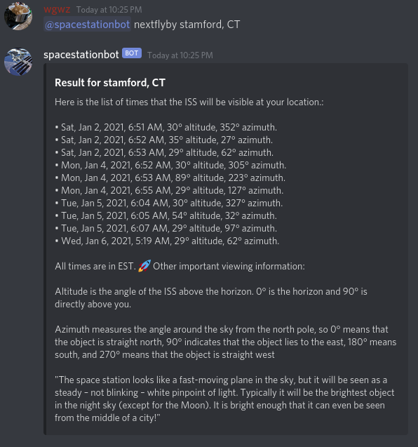

This is the homepage of a Discord bot named the "spacestationbot". It's main goal is to deliver you an accurate time and set of viewing coordinates for the International space station. Here's a sample of what it looks like:

Under the hood, this bot uses pre-computed trajectory data called "ephemerides" from NASA's jet propulsion laboratory. From this data the viewing times and angles of the ISS can be calculated, for a given location on earth's surface. The bot will always return the viewing times in the timezone of the location you entered.
To add the bot to your server, visit here or directly via this link. For support or feature requests please visit this maintenance server.
This bot does not collect any info about it's users. However it does create a temporary cache of data on our server. This cache is used for the geocoding portion of the bot. The bot makes calls to OpenStreetMap. To prevent making unnecessary calls to that service, we cache those results for a period of time. This data does not have user info tied to that location. That said, the source code for this bot can be found here so you can confirm that for yourself.
Happy viewing!